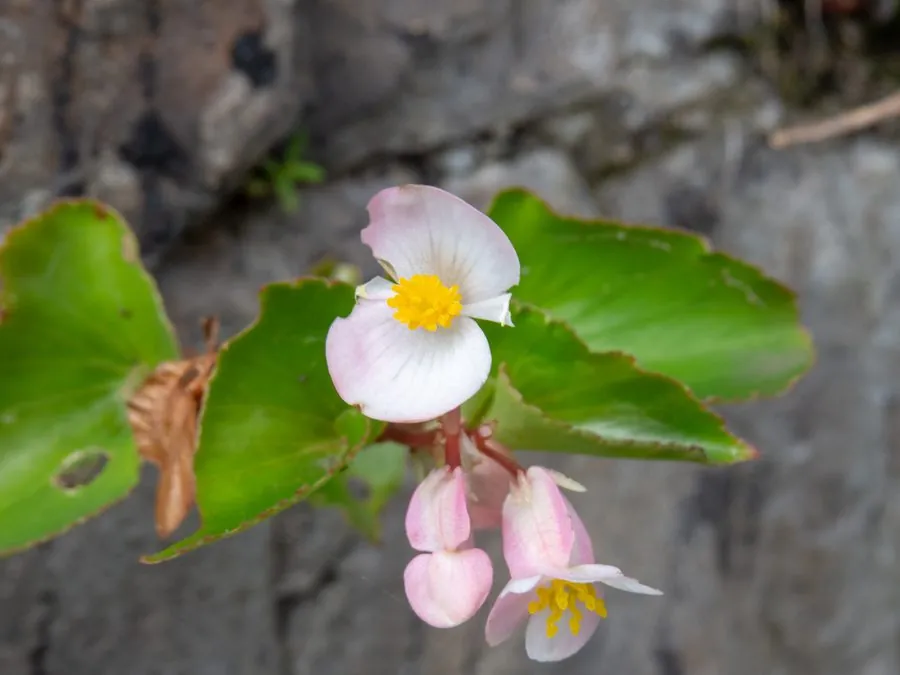

花卉与草本 · 植物界
四季海棠 Begonia cucullata

秋海棠科多年生草本，叶片肉质光亮，四季开花不断，是耐阴好养的窗台与花坛花卉，原产南美巴西，又名四季秋海棠。
- 分类
- 门被子植物门纲木兰纲目葫芦目科秋海棠科属秋海棠属
- 栖息环境
- 巴西的林下与溪边，喜温暖、湿润、半阴
- 地理分布
- 原产南美巴西，现世界各地广泛栽培，中国各地常见
- 保护级别
- 暂无评估
物种志
四季海棠为秋海棠科秋海棠属多年生草本，常作一年生栽培，株高 15–30 厘米，茎肉质、多汁，稍分枝。叶片互生，卵形至心形，边缘有细齿，表面光亮，绿色或带红晕。花单性同株，雌雄花同生于一花序，花有红、粉、白等色，花期 4–10 月，温暖地区可全年开花；果实为蒴果。
四季海棠原产南美洲巴西，喜温暖、湿润和半阴的环境，忌强光暴晒和高温干旱，在疏松肥沃的土壤中生长良好。它叶片肉质、花朵繁密，花期长，是窗台、花坛和吊篮的常见材料，也适合室内盆栽。栽培以播种、扦插为主，浇水时避免淋在叶片上，否则高温时容易引发叶斑病；花后修剪残花可促进新花不断开放。
形态与习性
- 株高15–30 厘米，茎肉质
- 花期4–10 月，温暖地区全年开花
- 果期花后结蒴果
- 光照喜半阴散射光，忌强光暴晒
- 水分喜湿润，忌积水
- 土壤疏松肥沃、排水良好的腐殖质土
- 繁殖播种、扦插
- 主要用途窗台盆栽、花坛、吊篮
趣味知识
- 四季海棠的花为单性花，雌花和雄花同生于一个花序上。
- 它的叶片肉质光亮，能储存水分，但怕烈日暴晒。
- 四季海棠耐阴，在散射光下也能持续开花，适合室内栽培。
- 浇水时避免淋湿叶片，高温高湿时容易引发叶斑病。